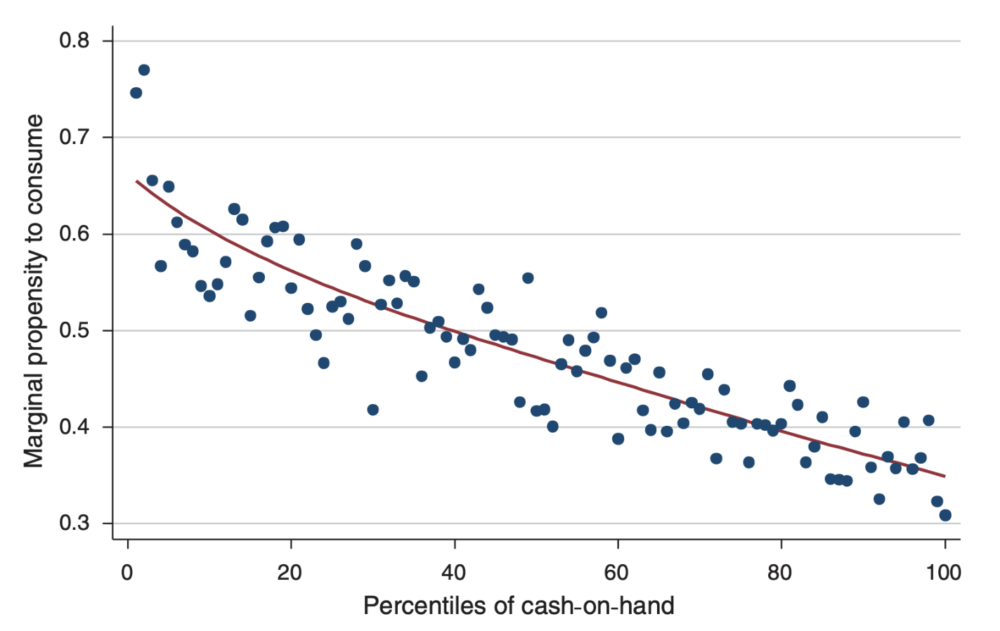
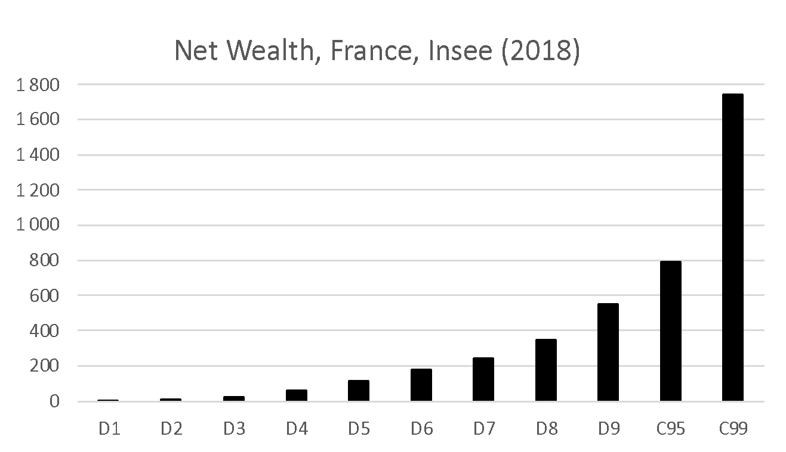
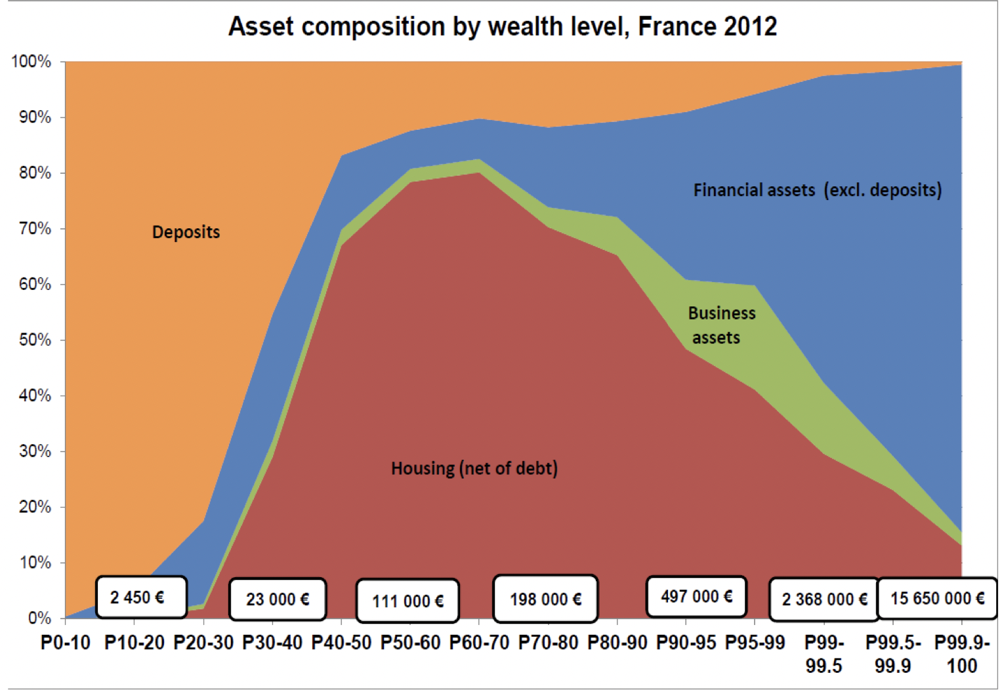
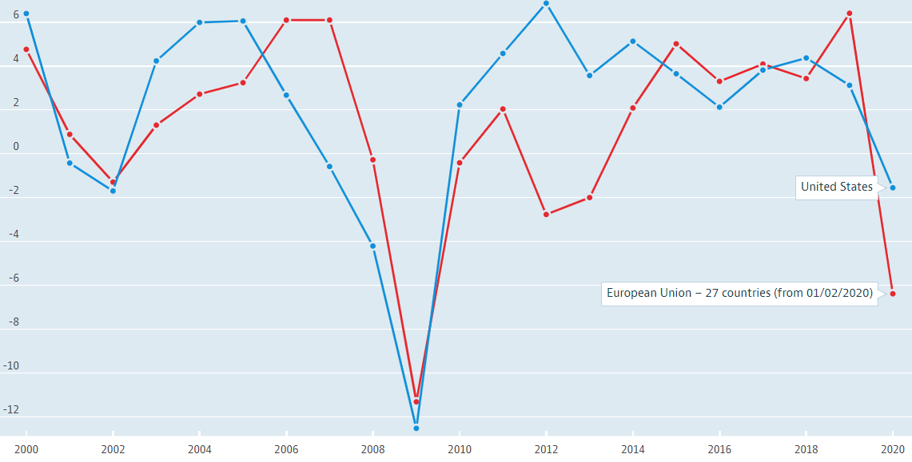
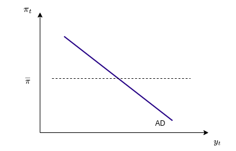

Aggregate Demand
Sessions Program
- Session 1: introduction / reminders on macro
- Session 2: aggregate demand
- Session 3: aggregate supply
- Session 4: macroeconomic fluctuations
- Session 5: monetary policy
- Session 6: unconventional monetary policies
Nominal / Real
Nominal / Real GDP
Let’s start with some notations1. In this course:
- \(Y_t\): Real GDP: number of consumption baskets produced by the economy
- \(P_t\): Price level: price of a given consumption basket
- \(\boxed{\pi_t = \frac{P_t-P_{t-1}}{P_{t-1}}}\): Inflation rate
With these definitions, the nominal GDP, i.e. the production sold at market prices is simply \(P_t Y_t\).
Nominal Interest Rate
To save across periods, agents have access to riskfree bonds yielding:
- \(i_t\): nominal interest rate between \(t\) and \(t+1\)
In an agent invests savings \(S_t\) in period \(t\), she gets \(S_t (1+i_t)\) in period \(t+1\)
Nominal / Real Interest Rate
What determines the decision to save more or less?
Let’s consider a simple thought experiment:
- an agent foregoes \(1\) unit of consumption in period \(t\) worth \(P_t\) at market prices. Her wealth is now \(P_t\)
- invested at nominal rate \(i_t\) this wealth becomes \(P_t (1+i_t)\) in period \(t+1\)
- using this new wealth she can afford to buy \(\frac{P_t (1+i_t)}{P_{t+1}}\) consumption goods at the new market price \(P_{t+1}\)
Recognizing the ratio \(1+\pi_{t+1} = \frac{P_{t+1}}{P_t}\) we conclude that each unit of consumption today can be exchanged for \(\frac{1+i_t}{1+\pi_{t+1}}\).
- it is more beneficial when nominal interest rate is high
- it is less beneficial when inflation is high
Real Interest Rates
We define the real interest rate \(r_t\) by:
\[\boxed{1+r_t = \frac{1+i_t}{1+\pi_{t+1}}}\]
It measures how beneficial it is to trade current consumption goods for future consumption goods.
To simplify calculations, we often use the logarithmic approximation2 :
\[\boxed{r_t = i_t - \pi_{t+1}}\]
This relation is sometimes called the Fisher equation.
Here we need some kind of concrete exercise.
Small Checkup
Quizz 1
Assume nominal interest rate is 4% and inflation 5%. What is the real interest rate (in percents)?
- 1
- -1
- 4/5
- 5/6
Quizz 2
The Fisherian effect is the tendency of inflation to rise and cancel any increase in nominal rates by the central bank. This is more likely to happen if:
- real rate is independent from nominal variables
- prices are rigid
- inflation is high
- debt is high
…
Demand
Components of Demand
The Components of Demand
In a market economy, spending decisions are made by:
- Consumers
- Firms
- Exporters and Importers
- Government
Government spending is decided by policy maker. Because it can be chosen independently from general income level, it is fully autonomous.
In this course, we will also take the decisions of exporters and importers as exogenous in order to focus on consumers and firms.3
Our main goal today
Establish why and how each of the demand components depend on \(Y\) and \(r\).
Consumers
Consumption Decisions


Why do consumers save?
. . .
- To substitute present goods by future goods.
. . .
What determines the substitution?
. . .
- The (real) interest rate
. . .
What else determines the substitution?
. . .
- Income today and tomorrow
Consumption Decisions
Given their preferences, how much consumers decide to spend is determined by:
- Their income today ( \(\color{green}{Y_t}\) )
- Their expected income in the future ( \(Y_{t+1}, Y_{t+2}, ...\) )
Given their expected income profile the decision to consume can be seen as an arbitrage between consumption today and consumption tomorrow.
This arbitrage depends on the real intertemporal interest rate ( \(\color{red}{r_t}\) ).
The two short term determinants of consumption should then be \(\color{green}{Y_t}\) and \(\color{red}{r_t}\).
Consumers: Ricardian and Keynesian households
Classically, we make the difference between two kinds of agents:
Ricardian Households
Agents who can freely reallocate consumption intertemporally.
Ricardian households choose not to consume more today, in order to consume more tomorrow.
Keynesian Households
Agents whose consumption in the current period is limited by a binding credit constraint. Either they can’t borrow at all or the amount they can borrow is limited today.
Keynesian Households consume today as much as they can.
We’ll study both kinds of agents in turn, starting with ricardian agents.
Ricardian Consumers
Let’s model the intertemporal choice of a ricardian household. They are rational decision takers, but have a preference for the present. To assume exposition, we assume they live for two periods only.
Denote by \(C_1\) and \(C_2\) consumption today and tomorrow.
A representative consumer maximizes: \[U(C_1, C_2) = \log(C_1) + \beta \log (C_2)\]
where \(\beta<1\) is a discount factor, denoting the fact that consumption today is preferred. \(\beta\) is typically close to 1.
Of course, this optimization is not free, it is subject to a budget constraint.
Ricardian Consumers
Denote today’s price level by \(P_1 = 1\) and future price level by \(P_2\).
Denote current nominal income by \(P_1 Y_1\) and future nominal income by \(P_2 Y_2\)
Assume our consumer chooses freely to consume \(C_1\) in period 1 at price \(P_1\) for a total amount \(C_1 P_1\)
The rest from today4, i.e. \(Y_1 P_1 - C_1 P_1\) is saved at nominal rate \(1+i\) and added to tomorrow’s income.
Tomorrow’s budget constraint is:
\[C_2 P_2 \leq (\underbrace{Y_1 P_1 - C_1 P_1}_{\text{Savings}}) (1+i) + Y_2 P_2\]
Consumers
The last equation can be reordered as:
\[C_1 P_1 (1+i) + C_2 P_2 \leq Y_1 P_1 (1+i) + Y_2 P_2\]
Divide by \(P_2\)
\[C_1 \frac{P_1}{P_2} (1+i) + C_2 \leq Y_1 \frac{P_1}{P_2} (1+i) + Y_2\]
And recognize \(1+\pi = \frac{P_2}{P_1}\)
\[C_1 \frac{1+i}{1+\pi} + C_2 \leq Y_1 \frac{1+i}{1+\pi} + Y_2\]
Consumers
Eventually, the intertemporal budget constraint reads:
\[C_1 (1 + r) +C _2 \leq Y_1 (1 + r) + Y_2\]
Right hand side is income and is a given of the optimization. It corresponds to total wealth.
In the left hand side: \((1+r)\) can be understood as the price of today’s consumption goods.
What is the effect of higher real interest rate ?
- Consumption today is more expensive: substitution effect -> higher consumption of future good, less consumption in the present
- Today’s income is more valuable: it relaxes the budget constraint creating a direct wealth effect -> more consumption of both goods
Consumers
A consumer solves \[\begin{aligned}\max_{C_1, C_2} & & U(C_1, C_2) \\ s.t. & & C_1 (1 + r) +C _2 \leq Y_1 (1 + r) + Y_2 \end{aligned}\]
This is a constrained optimization problem, identical to those seen in microeconomics.
Using your math skills5, we obtain the optimal (desired consumption) in period \(1\):
\[\boxed{C_1 = \frac{1}{1+\beta} \left( Y_1 + \frac{1}{1+r} Y_2 \right)}\]
Ricardian households
How do we read this optimal formula? \[C_1 = \frac{1}{1+\beta}\underbrace{ \left( Y_1 + \frac{1}{1+r} Y_2 \right) }_{\text{Permanent Income} }\]
- The permanent income is the actualized value of all income perceived by the consumer over her optimization horizon.
- it is essentially the value of lifetime income
- similar to the valuation of a stream of dividend
- A ricardian households spends in period 1 a fraction of her lifetime income
- this comes from a motive to smooth consumption over time implied by utility function
- in the two periods case, the fraction is \(\frac{1}{1+\beta}\approx \frac{1}{2}\)
- if there were more than two periods, the fraction would be even smaller
Response to interest rate
From the last formula, we can see how ricardian households change their consumption in response to a change \(\color{red}\Delta r\) in real interest rates. Then consumption increases by \(\color{red}{\Delta C}\) such that: \[C_1 + {\color{red}{\Delta C}} = \frac{1}{1+\beta} \left( Y_1 + \frac{1}{1+r+\color{red}\Delta r} Y_2 \right)\]
This yields the approximate formula6:
\[\boxed{\frac{\Delta C}{\Delta r} = -\frac{1}{1+\beta} \frac{1}{\left(1+r\right)^2} Y_2}\]
In line with the intuition: consumption today is lower when real interest rate is higher.
Temporary income shock
How do ricardian households react to income shocks?
Suppose income increases temporarily (in period \(1\)) by \(\color{green}{\Delta Y}\). Then consumption increases by \(\color{green}{\Delta C}\) such that: \[C_1 + {\color{green}{\Delta C}} = \frac{1}{1+\beta}\underbrace{ \left( Y_1 + {\color{green}{\Delta Y}} + \frac{1}{1+r} Y_2 \right) }_{\text{Permanent Income} }\]
We get a marginal propensity to consume (out of a temporary shock) equal to7:
\[MPC^{\text{ricardian}} = \frac{\Delta C}{\Delta Y} = \frac{1}{1+\beta}<<1\]
Keynesian Households
Intrinsically keynesian agents have the same preferences over consumption as ricardian households.8
Ideally they would like to spend some fraction of their permanent income but are facing a limit to the amount they can borrow.
A pure keynesian agent (who cannot borrow at all) faces the simple constraint \(C_1 \leq Y_1\) and since she consumes as much as possible the consumption is just: \[C_1 = Y_1\]
Her marginal propensity to consume is:
\[MPC^{\text{keynesian}} = 1\]
Quizz 3
Which of the following agents is more likely to be keynesian?
- a student who is considering a loan offer from the bank to cover university fees
- a middle-class household reducing food expenditure to be able to repay an outstanding loan
- a low-income worker in the United States, who doesn’t have any credit card
- a stock-market trader
Quizz 4
Assume that the yearly payment to repay a loan \(L\) is \(L\left(1-\frac{1}{1+r}\right)\) What could be the constraint for a keynesian agent who is allowed to borrow only up the point where repayments are equal to a fraction \(\lambda=33\%\) of his income?
- \(C_1 \leq Y_1\)
- \(C_1 \leq \lambda Y_1\)
- \(C_1 \leq \lambda Y_1 \left(1-\frac{1}{1+r}\right)\)
- \((C_1 - Y_1) \left(1-\frac{1}{1+r}\right) \leq \lambda Y_1\)
Aggregate consumption
To know the behaviour of aggregate consumption, in particular the aggregate marginal propensity to consume, we must know the proportion of ricardian and keynesian households.

Let’s have a look at the MPC distribution for France.9


Apparently MPC is well predicted by Cash-in-hand (amount of money left to household after having made all compulsory payments).


Agents in the middle of the wealth distribution have a mortgage, whose interests leaves very little to spend after payments. They have lower cash-in-hand hence higher marginal propensity to consume (than rich agents).
Wealthy hand to mouth agents
We have just seen that agents in the middle of the wealth distribution, hold a wider proportion of wealth in illiquid assets (housing)
- Their cash in hand (available for immediate purchase) is reduced. A sizable fraction of ther income goes into repaying their loan…).
- They have higher MPC
- They also react to interest rates changes (notably those who have floating interest rates)
- In a very influential paper, “Monetary Policy According to HANK”, 2018, Kaplan, Moll and Violante, stress out the role of “wealthy hand to mouth” and the need to take their existence to evaluate the influence of monetary policies.
Producers
Producers
How does the demand of producers for investment goods depend on interest rate?
Take an hypothetical firm.
It needs capital to produce.
To buy more capital, the firm can borrow at a real rate \(r\). It will need to repay the loan after production as taken place. Real rate is called the external cost of funds.
Intuitively, the lower the cost of funds, the easier it is to borrow, and the more capital goods, the firm will seek to purchase.
So demand for investment by firms is decreasing in the interest rate.
This reasoning is correct when return on physical investment is decreasing, let’s prove it.
Producers
A firm produces \(f(K)\) using capital \(K\). We assume decreasing marginal return on production10, i.e. \(f^{\prime\prime}(K)<0\) (And of course \(f^{\prime}(K)> 0\)).
For simplicity, assume the firm borrows a quantity \(I\) to finance \(K\) i.e. \(K=I\). After production it needs to repay \(I(1+r)\) in the next period.
The profit maximization program reads:\(\max π = f(I) - I (1+r)\)
When the firm is free to borrow as much as it wants, the optimality condition is just: \[f^{\prime}(I) = 1+r\]
This defines implicitly \(I(r)\). Since \(f^{\prime}(I)\) is decreasing in \(I\), \(I(.)\) is a decreasing function of \(r\).
Reality Check

In the last years, it looks like, the investment channel of demand hasn’t worked so well.
In the last two crises, and after, interest rates were very low. And investment low too.
There are many reasons for that:
- Uncertainty about economic outcomes
- Risk averse firms facing uncertain value of production produce less
- Even though the real rate is low, the financing conditions faced by the firms might be different
- The banks are risk averse too
Deriving Aggregate Demand
The IS Curve
Our work on the behaviour of consumers and firms, allows us to write. \[\begin{aligned} C(Y,r) & = & C_0 + C_Y Y + C_r r \\ I(r) & = & I_0 + I_r r \end{aligned}\]
where \(I_r>0\) and where the values \(C_Y>0\) and \(C_r<0\) depend on the proportion of ricardian and keynesian households.
So, if we take \(G\) and \(NX\) as exogenous, the sum of all spending components is:
is: \[C(Y,r) + I(r) + G + NX\]
Is that Aggregate Demand? No!
IS Curve
In macroeconomics, the demand side of the whole economy, is characterized by the relation:
\[Y=C(Y,r) + I(r) + G + NX\]
which links implicitly production and real interest rate.
This relation is called Investment-Saving equilibrium (IS curve) because it captures an intertemporal tradeoff (through the real interest rate).
It corresponds to an equilibrium on the market for goods and services, determined by spending preferences, with perfectly elastic production.
IS Curve
Some remarks:
- the microfounded IS relation involves only real quantities
- it implies only rational decisions from consumers and firms
- demand can be microfounded without the need for money or prices
Interestingly, the microfoundation of demand shows that it is perfectly consistent with the new classical approach.
There is no controversy in the profession about the existence of the demande curve. There is disagreement about:
- the aggregate marginal propensity to consume and the fiscal multiplier
- the supply curve…
IS Curve
We can differentiate the IS curve to get: \[\Delta Y = C_Y \Delta Y + C_r \Delta r + I_r \Delta r\]
It is common to rewrite this equation in log deviations as follows. Write
\[\frac{\Delta Y}{Y} = C_Y \frac{\Delta Y}{Y} + \frac{C_r}{Y}\Delta r + \frac{I_r}{Y}\Delta r\]
then set \(y=\frac{\Delta Y}{Y}\) to get the equation describing the IS curve in logarithms: \[y= -\sigma (r-r^{\star}) \]
where \[\sigma = \frac{-\left(\frac{C_r}{Y}+\frac{I_r}{Y}\right)}{1-C_Y}>0\].
IS Curve
In what follows we will consider a slightly modified version of the IS curve
\[\boxed{y_t = -\sigma (r_r - r^{\star}) + \theta_t}\]
where \(\sigma = \frac{-\left(\frac{C_r}{Y}+\frac{I_r}{Y}\right)}{1-C_y}>0\) and \(\theta_t\) is a demand shock, which captures all shocks external to the model, as well as some simplifications we made along the exposition.
For instance, future income of consumers dropped out from all equations. If there is a positive change in consumers expectations (optimism) we would consider it as a change in \(\theta_t\).
In the same way a rise in government spending, is an autonomous shift in the IS curve, which we capture by a shift in \(\theta_t\).
The Role of the Central Bank
Monetary Policy
The main objective of the central bank consists in stabilizing inflation \(\pi\) around its target \(\pi^{\star}\)
- It achieves this objective by influencing demand in response to business cycles fluctuations
- Demand is affected by real interest rate \(r\)
- more precisely ricardian households and firms react to real interest rate
Monetary Policy
In practice, the central bank sets the nominal interest rate \(i\)
- And because inflation does not follow interest rate 1 to 1, the CB is able to influence real interest rate
To simplify, we assume the CB indirectly chooses the real interest rate to whichever level it wants
We can describe the response function of the central bank following Romer 2002 as: \[\boxed{r_r = r^{\star} + \kappa (\pi_t - \pi^{\star})}\]
- Typically CBs raise interest rate to reduce inflation, so \(\kappa>0\)
Aggregate Demand
Aggregate Demand
Now that we are equiped with the (IS) curve: \[y_t = -\sigma (r_t - r^{\star}) + \theta_t\]
And the central bank’s policy response (MP) \[r_t = r^{\star} + \kappa (\pi_t -\pi)\]
We can susbtitute out real interest rate to get an aggregate demand (AD) equation \[\boxed{y_t = -\sigma \kappa (\pi_t - \pi^{\star}) + \theta_t}\]
where \(\theta_t\) is the demand shock.
This curve represents the equilibrium on the goods and services markets, taking into account the central bank’s decision rule.
Aggregate Demand Curve

Aggregate Demand (AD): \[y_t = \theta_t - \sigma \gamma (\pi_t - \overline{\pi})\]
Note how aggregate demand \(y_t\) is a decreasing function of inflation (and prices).
Exective Summary
- Agregate demand can be microfounded by relying on rational optimization by consumers and firms
- Keynesian households have a high marginal propensity to consume
- Ricardian households have a low marginal propensity to consume and react (negatively) to real interest rate
- Firms invest less when real interest rate is lower
- To stabilize inflation, the central bank stimulates demand by modifying the real interest rate. It does so indirectly by setting the nominal interest rate.
Learning guide
- what’s the real interest rate
- what are ricardian and keynesian households
- how do ricardian households optimize intertemporal consumption
- writing the budget constraint
- performing the constrained optimization11
- what is the optimization program of an investing firm
- how to derive the Agregate Demand curve given
- the IS curve
- the response of the central bank
Coming Next
Aggregate Supply: why is it upward sloping in the short term?
Footnotes
We use \(t\) to denote different periods in time.↩︎
In logarithm (recall \(\log(1+x)\approx x\)). This approximation is valid because \(i_t\) and \(\pi_t\) are typically a few percents.↩︎
For our purposes, we could also make the stronger assumption that economy is closed, that is exports and imports are zero.↩︎
Note that the formula is exactly the same whether the agent saves \((C_1 P_1 < Y_1 P_1)\) or borrows \((C_1 P_1 > Y_1 P_1)\) in period 1.↩︎
See Exercise 2.↩︎
To obtain the formula, one needs to take a Taylor expansion, w.r.t. \(\Delta r\). Knowing how to do it is not required.↩︎
We used to periods to simplify exposition. In practical NK models, permanent income is \(\sum_t \frac{1}{(1+r)^t} Y_t\) and the fraction consumed in the first period would be \((1-\beta) \approx 0\) which is very close to 0.↩︎
Dear professor, is the above expression a convoluted way to say that both agents are humans? Yes.↩︎
From From Fiscal Policy and MPC Heterogeneity, Tullio Jappelli and Luigi Pistaferri, American Economic Journal: Macroeconomics, 2014↩︎
If marginal returns were not decreasing the result could actually be false.↩︎
This is not strictly required.↩︎